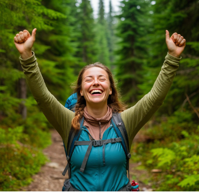
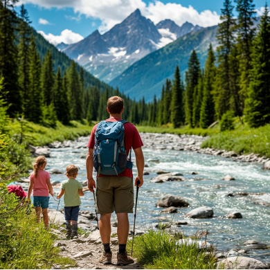

Отзывы туристов об отдыхе в Карелии
Мы гордимся тем, что 98% наших гостей рекомендуют нас своим друзьям и близким. В этом
разделе вы можете ознакомиться с реальными отзывами о наших турах.

Анна из Москвы пишет: «Это было лучшее путешествие в моей жизни! Организация на высшем
уровне, а виды просто нереальные. Я даже не ожидала, что могу так — просыпаюсь утром, а за
окном лес и озеро, и первая мысль: не в соцсети выложить, а просто стоять и смотреть.
Организация на высшем уровне: ни одной минуты хаоса, всё по времени, но без ощущения
"солдатской казармы". Гид оказался человеком-энциклопедией с чувством юмора — я за три дня
узнала о Карелии больше, чем за всю жизнь до этого. А вечера у костра! Мы сидели, пили
чай, разговаривали с незнакомыми людьми так, будто знаем друг друга сто лет. Вернулась
домой отдохнувшей до костей и уже через неделю поймала себя на мысли: когда снова?»

Сергей из Санкт-Петербурга отмечает: «Отличный гид, который знает историю каждого камня.
Спасибо за незабываемые выходные!. Это не формальные лекции из-под козырька, а живые
рассказы, после которых ландшафт будто оживает: идёшь по лесу и уже видишь не просто скалы
и мхи, а целую историю края. Отдельное спасибо за небанальные места — мы не топтались в
толпе у самых известных точек, а видели настоящую, нетуристическую Карелию. Тишина на
озере ранним утром — это то, что я теперь вспоминаю в пробках. Незабываемые выходные —
факт. Уже посоветовал тур коллегам, и они вернулись в таком же восторге. Обязательно
поедем с женой ещё раз».
Советы по подготовке к поездке
Мы также делимся полезными советами для будущих путешественников:
Не забудьте взять с
собой репелленты от комаров в летний период, удобную обувь для прогулок по лесу и термос с
горячим чаем.
Карелия прекрасна в любое время года, но особенно она хороша в период
«белых ночей» и золотой осени.